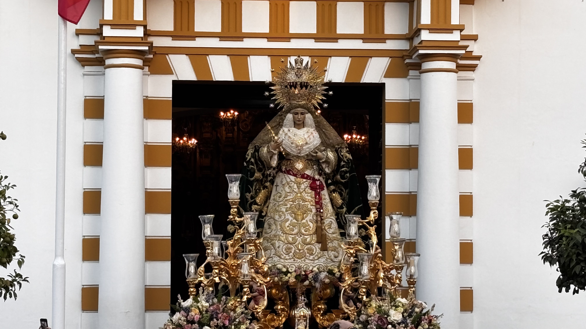

Semana Santa Dos Hermanas
☰
VIERNES DE DOLORES
SÁBADO DE PASIÓN
DOMINGO DE RAMOS
LUNES SANTO
MARTES SANTO
MIÉRCOLES SANTO
JUEVES SANTO
MADRUGÁ
VIERNES SANTO
SÁBADO SANTO
DOMINGO DE RESURRECCIÓN
Todas las Hermandades de la Semana Santa de Dos Hermanas con sus itinerarios en la palma de tu mano
